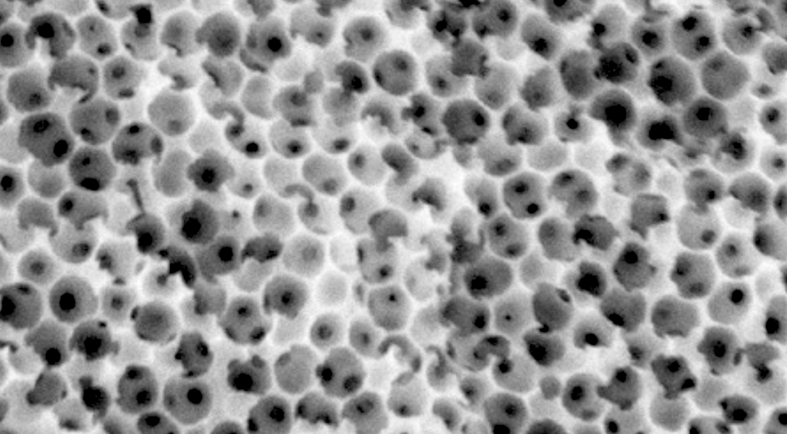

Light scattering in disordered nanoscale structures
The vibrant structural colors seen in blue bird feathers arise from complex light scattering in disordered nanostructures. While double scattering and total internal reflection have been studied in bird coloration, the impact of higher-order scattering is less understood. Using a Monte Carlo model, we traced light paths through disordered, structurally colored materials inspired by bird feathers to reveal how multiple scattering shapes their reflectance and polarization spectra. Comparing natural feathers to these biomimetic samples, we found subtle differences in their scattering behavior despite similar blue hues. By accounting for the light's fields—not just its intensities—we achieved accurate predictions of polarization, offering new insights into the physics of structural color.
Selected works:
AB Stephenson*, A von Raesfeld, V Hwang, S Barkley, VN Manoharan. How weak multiple scattering affects structural color in disordered nanoparticle assemblies and bird feathers . Preprint. *equal contribution
V Hwang*, AB Stephenson*, S Magkiriadou, J-G Park, VN Manoharan. Effects of Multiple Scattering on Angle-Independent Structural Color in Disordered Colloidal Materials . Phys. Rev. E 2020, 101 (1), 012614. *equal contribution
M Xiao, AB Stephenson, A Neophytou, V Hwang, D Chakrabarti, VN Manoharan. Investigating the Trade-off between Color Saturation and Angle-Independence in Photonic Glasses. Opt. Express 2021, 29 (14), 21212–21224.